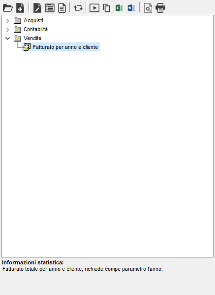
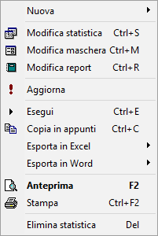

Statistiche+
La procedura
consente la realizzazione di statistiche personalizzate. La realizzazione
delle statistiche è facilmente attuabile grazie ad un generatore per step,
qui definito Wizard, che consente di effettuare le operazioni di creazione
e modifica della statistica in maniera guidata.
Con le statistiche
così create si possono comporre dei menù a completa discrezione dell'utilizzatore.
La procedura
utilizza un menù principale, da cui è possibile richiamare tutte le funzioni
della procedura.

La barra
degli strumenti contiene una serie di bottoni, che consentono di abilitare
varie funzioni:
Pulsante |
Tasti |
Descrizione
della funzione |
|
|
NUOVA CARTELLA
Crea
una nuova cartella nel menù principale. |

|
|
NUOVA
STATISTICA
Crea
una nuova statistica. |

|
CTRL+S |
MODIFICA STATISTICA
Modifica
la statistica selezionata. |

|
CTRL+M |
MODIFICA MASCHERA
Modifica
la maschera per la selezione dei parametri della statistica selezionata. |
|
CTRL+R |
CREA/MODIFICA REPORT
Creazione
o modifica del formato di stampa relativo alla statistica selezionata. |
|
|
AGGIORNA MENÙ
Consente
di aggiornare il menù principale. |
|
CTRL+E |
ESEGUI
Esegue
la statistica selezionata. |

|
CTRL+C |
COPIA IN APPUNTI
Copia
negli appunti il risultato dell'esecuzione della statistica selezionata. |
|
CTRL+X |
ESPORTA IN EXCEL
Esporta
in Excel il risultato dell'esecuzione della statistica selezionata. |
|
CTRL+W |
ESPORTA IN WORD
Esporta
in Word il risultato dell'esecuzione della statistica selezionata. |

|
F2 |
ANTEPRIMA
DI STAMPA
Esegue
l’anteprima di stampa a video della statistica selezionata. |
|
CTRL+F2 |
STAMPA
Esegue la stampa
della statistica selezionata. |

Selezionando una statistica
e premendo il tasto destro del mouse, compare il menù a lato, che consente
di utilizzare, oltre alle funzioni già descritte, anche le seguenti:
Eliminazione della statistica,
o della cartella se si è posizionati su di una cartella vuota.
Creazione, modifica ed eliminazioni
di modelli per l'esportazione su Excel (da Esporta in Excel).
Creazione, modifica ed eliminazioni
di modelli per l'esportazione su Word (da Esporta in Word).